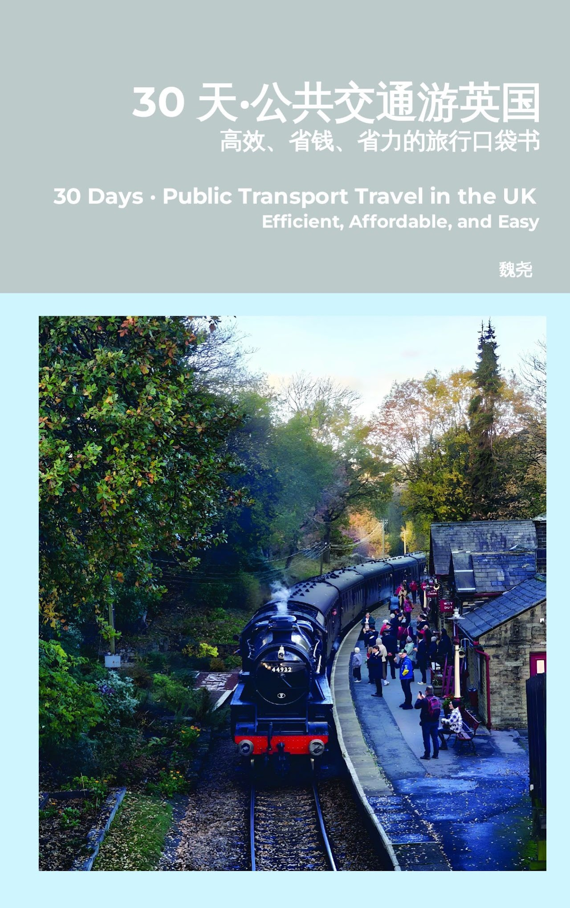

Travel
Go Far Away

30 天·公共交通游英国：高效、省钱、省力的旅行口袋书
你是否打算去英国旅行，却被复杂的火车票、地铁卡、各类通票和混乱的公共交通系统搞得一头雾水？《30天·公共交通游英国》是一本专为中文读者打造的英国出行实用指南。
作者结合多年旅行与英国生活经验，用最清晰的中文，手把手教你看懂并用好英国的公共交通，从希思罗等各大机场如何进城，到 Oyster 卡、contactless 支付、火车票如何提前买更划算、各类通票 Railcard 怎么选，再到伦敦深度 Citywalk 路线，一应俱全。
全书包含详细的交通方式对比、分城市的实用攻略、路线图与省钱技巧，帮你避开常见的踩坑，把钱花在刀刃上。无论是初次赴英的游客、留学生，还是计划长途旅行的自由行者，都能用它高效、省钱、省力地玩转英国。
30 Days · Public Transport Travel in the UK
Planning a trip to the UK, but feeling lost in the maze of train tickets, travel cards, railcards, and a public transport system that seems impossible to figure out?
This practical travel guide is written specifically for Chinese-speaking travellers. It explains how to understand and make the most of Britain's public transport, from getting into the city from Heathrow and other major airports to using Oyster cards, contactless payment, advance train tickets, Railcards, and central London walking routes.